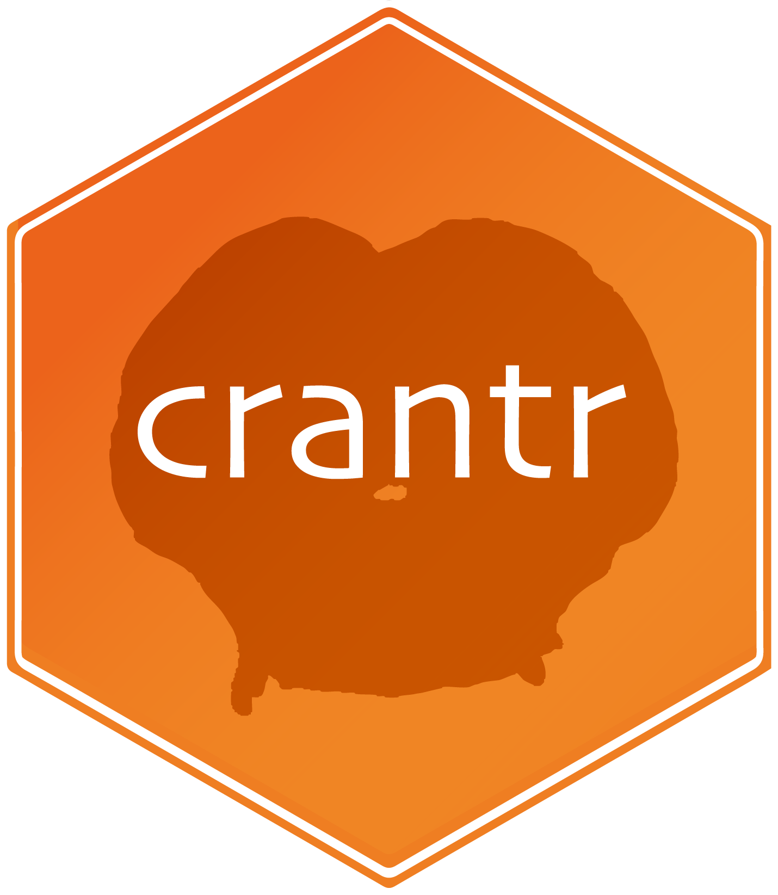

Find a good "key" point on a CRANT neuron to associate with annotations
Source:R/key-point.R
crant_key_point.RdThe chosen point sits at the major branch point of the L2 skeleton of each neuron. By default the L2 skeleton is rerooted onto the endpoint furthest from the current root so that a simplified representation with one branch point can be calculated; without this, the longest path from the root may not contain a branch point at all. If no branch point can be identified the original root point is used as a fallback.
Arguments
- ids
One or more CRANT root ids (anything accepted by
crant_ids()).- raw
Whether to return points in raw (voxel) space (default) or nm.
- reroot
Whether to reroot the incoming neuron onto the furthest endpoint before simplifying.
- ...
Additional arguments passed to
crant_read_l2skel().
Value
An N x 3 matrix of point locations (one row per input id). Ids whose
skeleton or key point could not be computed yield a row of NAs.
Details
Reads an L2 skeleton for each id via crant_read_l2skel() and
picks the principal branch point with fafbseg::key_point_from_neuron().
Unlike the flywire and aedes datasets, the CRANT segmentation is hosted on
a separate CAVE server (proofreading.zetta.ai), which the Python fafbseg
package cannot currently target. This means fafbseg::read_l2skel() (and
therefore fafbseg::flywire_key_point()) cannot reach it, so this function
reads via crant_read_l2skel() (pcg_skel) rather than sharing the flywire
read path. It is consequently slower than its flywire/aedes equivalent.